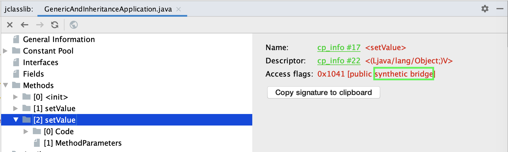

- 00 开篇词 业务代码真的会有这么多坑？.md.html
- 01 使用了并发工具类库，线程安全就高枕无忧了吗？.md.html
- 02 代码加锁：不要让“锁”事成为烦心事.md.html
- 03 线程池：业务代码最常用也最容易犯错的组件.md.html
- 04 连接池：别让连接池帮了倒忙.md.html
- 05 HTTP调用：你考虑到超时、重试、并发了吗？.md.html
- 06 2成的业务代码的Spring声明式事务，可能都没处理正确.md.html
- 07 数据库索引：索引并不是万能药.md.html
- 08 判等问题：程序里如何确定你就是你？.md.html
- 09 数值计算：注意精度、舍入和溢出问题.md.html
- 10 集合类：坑满地的List列表操作.md.html
- 11 空值处理：分不清楚的null和恼人的空指针.md.html
- 12 异常处理：别让自己在出问题的时候变为瞎子.md.html
- 13 日志：日志记录真没你想象的那么简单.md.html
- 14 文件IO：实现高效正确的文件读写并非易事.md.html
- 15 序列化：一来一回你还是原来的你吗？.md.html
- 16 用好Java 8的日期时间类，少踩一些“老三样”的坑.md.html
- 17 别以为“自动挡”就不可能出现OOM.md.html
- 18 当反射、注解和泛型遇到OOP时，会有哪些坑？.md.html
- 19 Spring框架：IoC和AOP是扩展的核心.md.html
- 20 Spring框架：框架帮我们做了很多工作也带来了复杂度.md.html
- 21 代码重复：搞定代码重复的三个绝招.md.html
- 22 接口设计：系统间对话的语言，一定要统一.md.html
- 23 缓存设计：缓存可以锦上添花也可以落井下石.md.html
- 24 业务代码写完，就意味着生产就绪了？.md.html
- 25 异步处理好用，但非常容易用错.md.html
- 26 数据存储：NoSQL与RDBMS如何取长补短、相辅相成？.md.html
- 27 数据源头：任何客户端的东西都不可信任.md.html
- 28 安全兜底：涉及钱时，必须考虑防刷、限量和防重.md.html
- 29 数据和代码：数据就是数据，代码就是代码.md.html
- 30 如何正确保存和传输敏感数据？.md.html
- 31 加餐1：带你吃透课程中Java 8的那些重要知识点（一）.md.html
- 32 加餐2：带你吃透课程中Java 8的那些重要知识点（二）.md.html
- 33 加餐3：定位应用问题，排错套路很重要.md.html
- 34 加餐4：分析定位Java问题，一定要用好这些工具（一）.md.html
- 35 加餐5：分析定位Java问题，一定要用好这些工具（二）.md.html
- 36 加餐6：这15年来，我是如何在工作中学习技术和英语的？.md.html
- 37 加餐7：程序员成长28计.md.html
- 38 加餐8：Java程序从虚拟机迁移到Kubernetes的一些坑.md.html
- 答疑篇：代码篇思考题集锦（一）.md.html
- 答疑篇：代码篇思考题集锦（三）.md.html
- 答疑篇：代码篇思考题集锦（二）.md.html
- 答疑篇：加餐篇思考题答案合集.md.html
- 答疑篇：安全篇思考题答案合集.md.html
- 答疑篇：设计篇思考题答案合集.md.html
- 结束语 写代码时，如何才能尽量避免踩坑？.md.html
- 捐赠
18 当反射、注解和泛型遇到OOP时，会有哪些坑？
今天，我们聊聊 Java 高级特性的话题，看看反射、注解和泛型遇到重载和继承时可能会产生的坑。
你可能说，业务项目中几乎都是增删改查，用到反射、注解和泛型这些高级特性的机会少之又少，没啥好学的。但我要说的是，只有学好、用好这些高级特性，才能开发出更简洁易读的代码，而且几乎所有的框架都使用了这三大高级特性。比如，要减少重复代码，就得用到反射和注解（详见第 21 讲）。
如果你从来没用过反射、注解和泛型，可以先通过官网有一个大概了解：
Java Reflection API & Reflection Tutorials；
Annotations & Lesson: Annotations；
Generics & Lesson: Generics。
接下来，我们就通过几个案例，看看这三大特性结合 OOP 使用时会有哪些坑吧。
反射调用方法不是以传参决定重载
反射的功能包括，在运行时动态获取类和类成员定义，以及动态读取属性调用方法。也就是说，针对类动态调用方法，不管类中字段和方法怎么变动，我们都可以用相同的规则来读取信息和执行方法。因此，几乎所有的 ORM（对象关系映射）、对象映射、MVC 框架都使用了反射。
反射的起点是 Class 类，Class 类提供了各种方法帮我们查询它的信息。你可以通过这个文档，了解每一个方法的作用。
接下来，我们先看一个反射调用方法遇到重载的坑：有两个叫 age 的方法，入参分别是基本类型 int 和包装类型 Integer。
@Slf4j
public class ReflectionIssueApplication {
private void age(int age) {
log.info("int age = {}", age);
}
private void age(Integer age) {
log.info("Integer age = {}", age);
}
}
如果不通过反射调用，走哪个重载方法很清晰，比如传入 36 走 int 参数的重载方法，传入 Integer.valueOf(“36”) 走 Integer 重载：
ReflectionIssueApplication application = new ReflectionIssueApplication();
application.age(36);
application.age(Integer.valueOf("36"));
但使用反射时的误区是，认为反射调用方法还是根据入参确定方法重载。比如，使用 getDeclaredMethod 来获取 age 方法，然后传入 Integer.valueOf(“36”)：
getClass().getDeclaredMethod("age", Integer.TYPE).invoke(this, Integer.valueOf("36"));
输出的日志证明，走的是 int 重载方法：
14:23:09.801 [main] INFO org.geekbang.time.commonmistakes.advancedfeatures.demo1.ReflectionIssueApplication - int age = 36
其实，要通过反射进行方法调用，第一步就是通过方法签名来确定方法。具体到这个案例，getDeclaredMethod 传入的参数类型 Integer.TYPE 代表的是 int，所以实际执行方法时无论传的是包装类型还是基本类型，都会调用 int 入参的 age 方法。
把 Integer.TYPE 改为 Integer.class，执行的参数类型就是包装类型的 Integer。这时，无论传入的是 Integer.valueOf(“36”) 还是基本类型的 36：
getClass().getDeclaredMethod("age", Integer.class).invoke(this, Integer.valueOf("36"));
getClass().getDeclaredMethod("age", Integer.class).invoke(this, 36);
都会调用 Integer 为入参的 age 方法：
14:25:18.028 [main] INFO org.geekbang.time.commonmistakes.advancedfeatures.demo1.ReflectionIssueApplication - Integer age = 36
14:25:18.029 [main] INFO org.geekbang.time.commonmistakes.advancedfeatures.demo1.ReflectionIssueApplication - Integer age = 36
现在我们非常清楚了，反射调用方法，是以反射获取方法时传入的方法名称和参数类型来确定调用方法的。接下来，我们再来看一下反射、泛型擦除和继承结合在一起会碰撞出什么坑。
泛型经过类型擦除多出桥接方法的坑
泛型是一种风格或范式，一般用于强类型程序设计语言，允许开发者使用类型参数替代明确的类型，实例化时再指明具体的类型。它是代码重用的有效手段，允许把一套代码应用到多种数据类型上，避免针对每一种数据类型实现重复的代码。
Java 编译器对泛型应用了强大的类型检测，如果代码违反了类型安全就会报错，可以在编译时暴露大多数泛型的编码错误。但总有一部分编码错误，比如泛型类型擦除的坑，在运行时才会暴露。接下来，我就和你分享一个案例吧。
有一个项目希望在类字段内容变动时记录日志，于是开发同学就想到定义一个泛型父类，并在父类中定义一个统一的日志记录方法，子类可以通过继承重用这个方法。代码上线后业务没啥问题，但总是出现日志重复记录的问题。开始时，我们怀疑是日志框架的问题，排查到最后才发现是泛型的问题，反复修改多次才解决了这个问题。
父类是这样的：有一个泛型占位符 T；有一个 AtomicInteger 计数器，用来记录 value 字段更新的次数，其中 value 字段是泛型 T 类型的，setValue 方法每次为 value 赋值时对计数器进行 +1 操作。我重写了 toString 方法，输出 value 字段的值和计数器的值：
class Parent<T> {
//用于记录value更新的次数，模拟日志记录的逻辑
AtomicInteger updateCount = new AtomicInteger();
private T value;
//重写toString，输出值和值更新次数
@Override
public String toString() {
return String.format("value: %s updateCount: %d", value, updateCount.get());
}
//设置值
public void setValue(T value) {
this.value = value;
updateCount.incrementAndGet();
}
}
子类 Child1 的实现是这样的：继承父类，但没有提供父类泛型参数；定义了一个参数为 String 的 setValue 方法，通过 super.setValue 调用父类方法实现日志记录。我们也能明白，开发同学这么设计是希望覆盖父类的 setValue 实现：
class Child1 extends Parent {
public void setValue(String value) {
System.out.println("Child1.setValue called");
super.setValue(value);
}
}
在实现的时候，子类方法的调用是通过反射进行的。实例化 Child1 类型后，通过 getClass().getMethods 方法获得所有的方法；然后按照方法名过滤出 setValue 方法进行调用，传入字符串 test 作为参数：
Child1 child1 = new Child1();
Arrays.stream(child1.getClass().getMethods())
.filter(method -> method.getName().equals("setValue"))
.forEach(method -> {
try {
method.invoke(child1, "test");
} catch (Exception e) {
e.printStackTrace();
}
});
System.out.println(child1.toString());
运行代码后可以看到，虽然 Parent 的 value 字段正确设置了 test，但父类的 setValue 方法调用了两次，计数器也显示 2 而不是 1：
Child1.setValue called
Parent.setValue called
Parent.setValue called
value: test updateCount: 2
显然，两次 Parent 的 setValue 方法调用，是因为 getMethods 方法找到了两个名为 setValue 的方法，分别是父类和子类的 setValue 方法。
这个案例中，子类方法重写父类方法失败的原因，包括两方面：
一是，子类没有指定 String 泛型参数，父类的泛型方法 setValue(T value) 在泛型擦除后是 setValue(Object value)，子类中入参是 String 的 setValue 方法被当作了新方法；
二是，子类的 setValue 方法没有增加 @Override 注解，因此编译器没能检测到重写失败的问题。这就说明，重写子类方法时，标记 @Override 是一个好习惯。
但是，开发同学认为问题出在反射 API 使用不当，却没意识到重写失败。他查文档后发现，getMethods 方法能获得当前类和父类的所有 public 方法，而 getDeclaredMethods 只能获得当前类所有的 public、protected、package 和 private 方法。
于是，他就用 getDeclaredMethods 替代了 getMethods：
Arrays.stream(child1.getClass().getDeclaredMethods())
.filter(method -> method.getName().equals("setValue"))
.forEach(method -> {
try {
method.invoke(child1, "test");
} catch (Exception e) {
e.printStackTrace();
}
});
这样虽然能解决重复记录日志的问题，但没有解决子类方法重写父类方法失败的问题，得到如下输出：
Child1.setValue called
Parent.setValue called
value: test updateCount: 1
其实这治标不治本，其他人使用 Child1 时还是会发现有两个 setValue 方法，非常容易让人困惑。
幸好，架构师在修复上线前发现了这个问题，让开发同学重新实现了 Child2，继承 Parent 的时候提供了 String 作为泛型 T 类型，并使用 @Override 关键字注释了 setValue 方法，实现了真正有效的方法重写：
class Child2 extends Parent<String> {
@Override
public void setValue(String value) {
System.out.println("Child2.setValue called");
super.setValue(value);
}
}
但很可惜，修复代码上线后，还是出现了日志重复记录：
Child2.setValue called
Parent.setValue called
Child2.setValue called
Parent.setValue called
value: test updateCount: 2
可以看到，这次是 Child2 类的 setValue 方法被调用了两次。开发同学惊讶地说，肯定是反射出 Bug 了，通过 getDeclaredMethods 查找到的方法一定是来自 Child2 类本身；而且，怎么看 Child2 类中也只有一个 setValue 方法，为什么还会重复呢？
调试一下可以发现，Child2 类其实有 2 个 setValue 方法，入参分别是 String 和 Object。

如果不通过反射来调用方法，我们确实很难发现这个问题。其实，这就是泛型类型擦除导致的问题。我们来分析一下。
我们知道，Java 的泛型类型在编译后擦除为 Object。虽然子类指定了父类泛型 T 类型是 String，但编译后 T 会被擦除成为 Object，所以父类 setValue 方法的入参是 Object，value 也是 Object。如果子类 Child2 的 setValue 方法要覆盖父类的 setValue 方法，那入参也必须是 Object。所以，编译器会为我们生成一个所谓的 bridge 桥接方法，你可以使用 javap 命令来反编译编译后的 Child2 类的 class 字节码：
javap -c /Users/zhuye/Documents/common-mistakes/target/classes/org/geekbang/time/commonmistakes/advancedfeatures/demo3/Child2.class
Compiled from "GenericAndInheritanceApplication.java"
class org.geekbang.time.commonmistakes.advancedfeatures.demo3.Child2 extends org.geekbang.time.commonmistakes.advancedfeatures.demo3.Parent<java.lang.String> {
org.geekbang.time.commonmistakes.advancedfeatures.demo3.Child2();
Code:
0: aload_0
1: invokespecial #1 // Method org/geekbang/time/commonmistakes/advancedfeatures/demo3/Parent."<init>":()V
4: return
public void setValue(java.lang.String);
Code:
0: getstatic #2 // Field java/lang/System.out:Ljava/io/PrintStream;
3: ldc #3 // String Child2.setValue called
5: invokevirtual #4 // Method java/io/PrintStream.println:(Ljava/lang/String;)V
8: aload_0
9: aload_1
10: invokespecial #5 // Method org/geekbang/time/commonmistakes/advancedfeatures/demo3/Parent.setValue:(Ljava/lang/Object;)V
13: return
public void setValue(java.lang.Object);
Code:
0: aload_0
1: aload_1
2: checkcast #6 // class java/lang/String
5: invokevirtual #7 // Method setValue:(Ljava/lang/String;)V
8: return
}
可以看到，入参为 Object 的 setValue 方法在内部调用了入参为 String 的 setValue 方法（第 27 行），也就是代码里实现的那个方法。如果编译器没有帮我们实现这个桥接方法，那么 Child2 子类重写的是父类经过泛型类型擦除后、入参是 Object 的 setValue 方法。这两个方法的参数，一个是 String 一个是 Object，明显不符合 Java 的语义：
class Parent {
AtomicInteger updateCount = new AtomicInteger();
private Object value;
public void setValue(Object value) {
System.out.println("Parent.setValue called");
this.value = value;
updateCount.incrementAndGet();
}
}
class Child2 extends Parent {
@Override
public void setValue(String value) {
System.out.println("Child2.setValue called");
super.setValue(value);
}
}
使用 jclasslib 工具打开 Child2 类，同样可以看到入参为 Object 的桥接方法上标记了 public + synthetic + bridge 三个属性。synthetic 代表由编译器生成的不可见代码，bridge 代表这是泛型类型擦除后生成的桥接代码：

知道这个问题之后，修改方式就明朗了，可以使用 method 的 isBridge 方法，来判断方法是不是桥接方法：
通过 getDeclaredMethods 方法获取到所有方法后，必须同时根据方法名 setValue 和非 isBridge 两个条件过滤，才能实现唯一过滤；
使用 Stream 时，如果希望只匹配 0 或 1 项的话，可以考虑配合 ifPresent 来使用 findFirst 方法。
修复代码如下：
Arrays.stream(child2.getClass().getDeclaredMethods())
.filter(method -> method.getName().equals("setValue") && !method.isBridge())
.findFirst().ifPresent(method -> {
try {
method.invoke(chi2, "test");
} catch (Exception e) {
e.printStackTrace();
}
});
这样就可以得到正确输出了：
Child2.setValue called
Parent.setValue called
value: test updateCount: 1
最后小结下，使用反射查询类方法清单时，我们要注意两点：
getMethods 和 getDeclaredMethods 是有区别的，前者可以查询到父类方法，后者只能查询到当前类。
反射进行方法调用要注意过滤桥接方法。
注解可以继承吗？
注解可以为 Java 代码提供元数据，各种框架也都会利用注解来暴露功能，比如 Spring 框架中的 @Service、@Controller、@Bean 注解，Spring Boot 的 @SpringBootApplication 注解。
框架可以通过类或方法等元素上标记的注解，来了解它们的功能或特性，并以此来启用或执行相应的功能。通过注解而不是 API 调用来配置框架，属于声明式交互，可以简化框架的配置工作，也可以和框架解耦。
开发同学可能会认为，类继承后，类的注解也可以继承，子类重写父类方法后，父类方法上的注解也能作用于子类，但这些观点其实是错误或者说是不全面的。我们来验证下吧。
首先，定义一个包含 value 属性的 MyAnnotation 注解，可以标记在方法或类上：
@Target({ElementType.METHOD, ElementType.TYPE})
@Retention(RetentionPolicy.RUNTIME)
public @interface MyAnnotation {
String value();
}
然后，定义一个标记了 @MyAnnotation 注解的父类 Parent，设置 value 为 Class 字符串；同时这个类的 foo 方法也标记了 @MyAnnotation 注解，设置 value 为 Method 字符串。接下来，定义一个子类 Child 继承 Parent 父类，并重写父类的 foo 方法，子类的 foo 方法和类上都没有 @MyAnnotation 注解。
@MyAnnotation(value = "Class")
@Slf4j
static class Parent {
@MyAnnotation(value = "Method")
public void foo() {
}
}
@Slf4j
static class Child extends Parent {
@Override
public void foo() {
}
}
再接下来，通过反射分别获取 Parent 和 Child 的类和方法的注解信息，并输出注解的 value 属性的值（如果注解不存在则输出空字符串）：
private static String getAnnotationValue(MyAnnotation annotation) {
if (annotation == null) return "";
return annotation.value();
}
public static void wrong() throws NoSuchMethodException {
//获取父类的类和方法上的注解
Parent parent = new Parent();
log.info("ParentClass:{}", getAnnotationValue(parent.getClass().getAnnotation(MyAnnotation.class)));
log.info("ParentMethod:{}", getAnnotationValue(parent.getClass().getMethod("foo").getAnnotation(MyAnnotation.class)));
//获取子类的类和方法上的注解
Child child = new Child();
log.info("ChildClass:{}", getAnnotationValue(child.getClass().getAnnotation(MyAnnotation.class)));
log.info("ChildMethod:{}", getAnnotationValue(child.getClass().getMethod("foo").getAnnotation(MyAnnotation.class)));
}
输出如下：
17:34:25.495 [main] INFO org.geekbang.time.commonmistakes.advancedfeatures.demo2.AnnotationInheritanceApplication - ParentClass:Class
17:34:25.501 [main] INFO org.geekbang.time.commonmistakes.advancedfeatures.demo2.AnnotationInheritanceApplication - ParentMethod:Method
17:34:25.504 [main] INFO org.geekbang.time.commonmistakes.advancedfeatures.demo2.AnnotationInheritanceApplication - ChildClass:
17:34:25.504 [main] INFO org.geekbang.time.commonmistakes.advancedfeatures.demo2.AnnotationInheritanceApplication - ChildMethod:
可以看到，父类的类和方法上的注解都可以正确获得，但是子类的类和方法却不能。这说明，子类以及子类的方法，无法自动继承父类和父类方法上的注解。
如果你详细了解过注解应该知道，在注解上标记 @Inherited 元注解可以实现注解的继承。那么，把 @MyAnnotation 注解标记了 @Inherited，就可以一键解决问题了吗？
@Target({ElementType.METHOD, ElementType.TYPE})
@Retention(RetentionPolicy.RUNTIME)
@Inherited
public @interface MyAnnotation {
String value();
}
重新运行代码输出如下：
17:44:54.831 [main] INFO org.geekbang.time.commonmistakes.advancedfeatures.demo2.AnnotationInheritanceApplication - ParentClass:Class
17:44:54.837 [main] INFO org.geekbang.time.commonmistakes.advancedfeatures.demo2.AnnotationInheritanceApplication - ParentMethod:Method
17:44:54.838 [main] INFO org.geekbang.time.commonmistakes.advancedfeatures.demo2.AnnotationInheritanceApplication - ChildClass:Class
17:44:54.838 [main] INFO org.geekbang.time.commonmistakes.advancedfeatures.demo2.AnnotationInheritanceApplication - ChildMethod:
可以看到，子类可以获得父类上的注解；子类 foo 方法虽然是重写父类方法，并且注解本身也支持继承，但还是无法获得方法上的注解。
如果你再仔细阅读一下@Inherited 的文档就会发现，@Inherited 只能实现类上的注解继承。要想实现方法上注解的继承，你可以通过反射在继承链上找到方法上的注解。但，这样实现起来很繁琐，而且需要考虑桥接方法。
好在 Spring 提供了 AnnotatedElementUtils 类，来方便我们处理注解的继承问题。这个类的 findMergedAnnotation 工具方法，可以帮助我们找出父类和接口、父类方法和接口方法上的注解，并可以处理桥接方法，实现一键找到继承链的注解：
Child child = new Child();
log.info("ChildClass:{}", getAnnotationValue(AnnotatedElementUtils.findMergedAnnotation(child.getClass(), MyAnnotation.class)));
log.info("ChildMethod:{}", getAnnotationValue(AnnotatedElementUtils.findMergedAnnotation(child.getClass().getMethod("foo"), MyAnnotation.class)));
修改后，可以得到如下输出：
17:47:30.058 [main] INFO org.geekbang.time.commonmistakes.advancedfeatures.demo2.AnnotationInheritanceApplication - ChildClass:Class
17:47:30.059 [main] INFO org.geekbang.time.commonmistakes.advancedfeatures.demo2.AnnotationInheritanceApplication - ChildMethod:Method
可以看到，子类 foo 方法也获得了父类方法上的注解。
重点回顾
今天，我和你分享了使用 Java 反射、注解和泛型高级特性配合 OOP 时，可能会遇到的一些坑。
第一，反射调用方法并不是通过调用时的传参确定方法重载，而是在获取方法的时候通过方法名和参数类型来确定的。遇到方法有包装类型和基本类型重载的时候，你需要特别注意这一点。
第二，反射获取类成员，需要注意 getXXX 和 getDeclaredXXX 方法的区别，其中 XXX 包括 Methods、Fields、Constructors、Annotations。这两类方法，针对不同的成员类型 XXX 和对象，在实现上都有一些细节差异，详情请查看官方文档。今天提到的 getDeclaredMethods 方法无法获得父类定义的方法，而 getMethods 方法可以，只是差异之一，不能适用于所有的 XXX。
第三，泛型因为类型擦除会导致泛型方法 T 占位符被替换为 Object，子类如果使用具体类型覆盖父类实现，编译器会生成桥接方法。这样既满足子类方法重写父类方法的定义，又满足子类实现的方法有具体的类型。使用反射来获取方法清单时，你需要特别注意这一点。
第四，自定义注解可以通过标记元注解 @Inherited 实现注解的继承，不过这只适用于类。如果要继承定义在接口或方法上的注解，可以使用 Spring 的工具类 AnnotatedElementUtils，并注意各种 getXXX 方法和 findXXX 方法的区别，详情查看Spring 的文档。
最后，我要说的是。编译后的代码和原始代码并不完全一致，编译器可能会做一些优化，加上还有诸如 AspectJ 等编译时增强框架，使用反射动态获取类型的元数据可能会和我们编写的源码有差异，这点需要特别注意。你可以在反射中多写断言，遇到非预期的情况直接抛异常，避免通过反射实现的业务逻辑不符合预期。
今天用到的代码，我都放在了 GitHub 上，你可以点击这个链接查看。
思考与讨论
泛型类型擦除后会生成一个 bridge 方法，这个方法同时又是 synthetic 方法。除了泛型类型擦除，你知道还有什么情况编译器会生成 synthetic 方法吗？
关于注解继承问题，你觉得 Spring 的常用注解 @Service、@Controller 是否支持继承呢？
你还遇到过与 Java 高级特性相关的其他坑吗？我是朱晔，欢迎在评论区与我留言分享你的想法，也欢迎你把今天的内容分享给你的朋友或同事，一起交流。
© 2019 - 2023 Liangliang Lee. Powered by gin and hexo-theme-book.